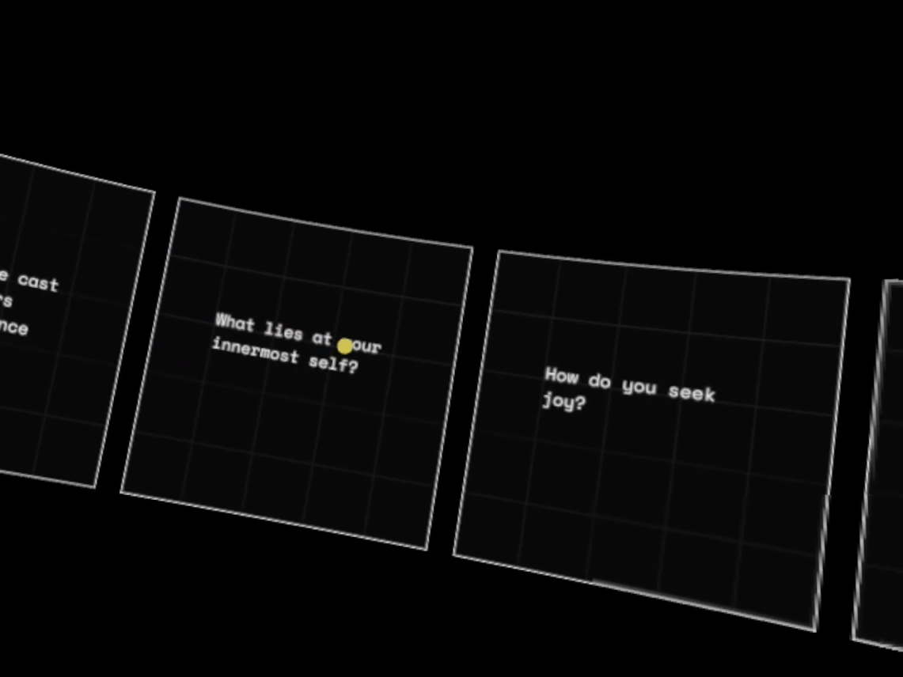

Work
Lab
Thoughts
Experiments
2023-24
Mostly play at the periphery of Human Computer Interaction.
Ephemeral Spaces
A series of explorations which investigate how everyday objects can be used to facilitate performance of digital tasks.
HoverBox
An early prototype of a handheld capacitive dial.
In collaboration with
Studio Poetics.
Pebble
An early prototype of a capacitive input device in the forms of pebbles.
In collaboration with
Studio Poetics.
Photoloom
An interpretation of what photo-keeping could look like making use of inherent nature of digital photos.
In collaboration with
Studio Poetics.
Digital Letters
An experiment that attempts to reimagine forms of digital communication aimed towards appreciative & descriptive patterns of communication.
In collaboration with
Studio Poetics.

Spatial Blog
Intended to explore the qualities of written text in a 3-d space in the context of a blog.
Installations
Exhibits for various showcases.
Micro-Experiments
Interaction experiements; tangible,gestural and others.